Nagi, Okayama: things to do, food and stays
Nagi · Okayama
Nagi
Highlighted on the Okayama map.
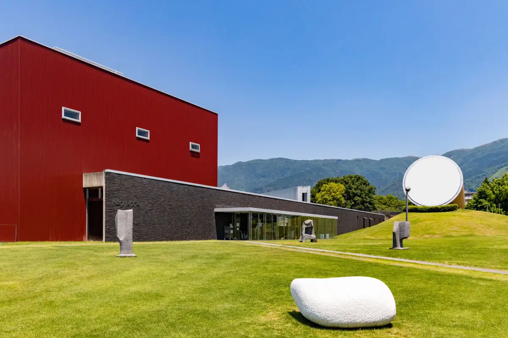
Stay
VILLA美都奈義
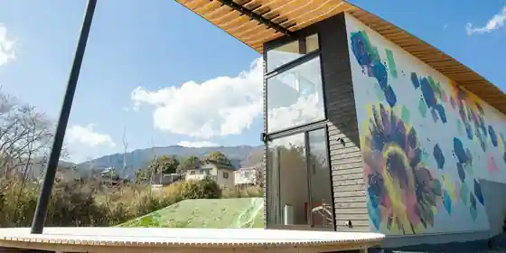
VILLA Mito Nagi
ヴィラ美都奈義
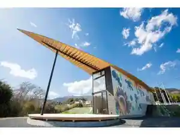
Villa Mito Nagi
Dining
ラ・ジータ
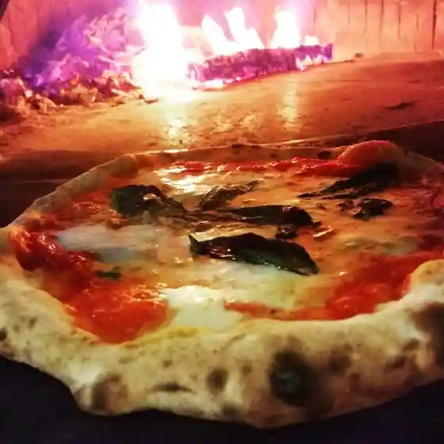
Ra Jita
木楽
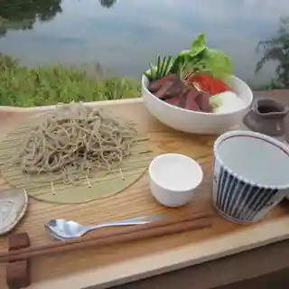
Ki Raku
まつぼっくり
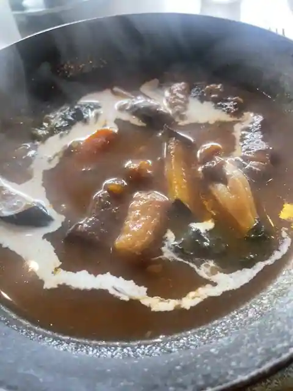
Matsubokkuri
Gateau-Mu＾r 奈義町本店
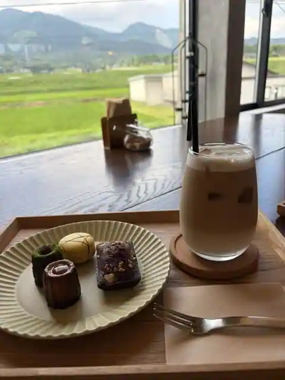
Gateau-Mu ^ r Nagi Machi Hon
中華レストランちゅー
Chuka Restaurant Chu
柴田商店
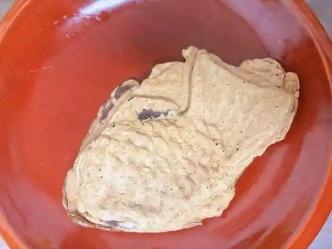
Shibata Sho
カフェアンドデリ チュロ
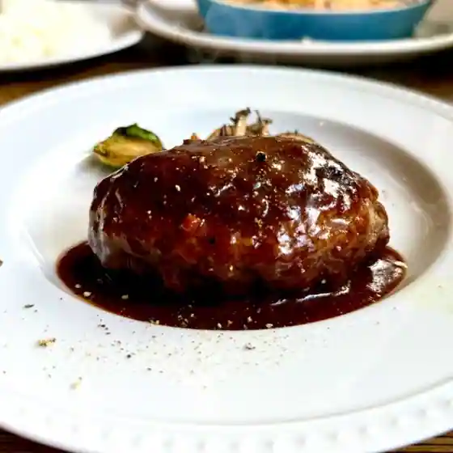
Cafe Andoderi Churo
小料理屋 けいこ
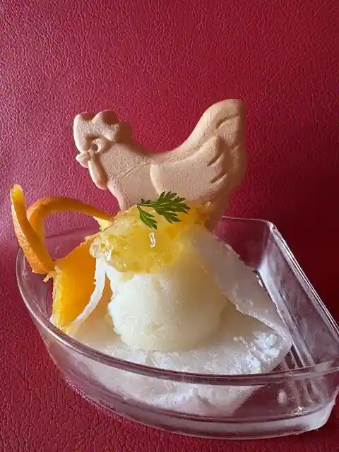
Koryoriya Keiko
那岐山麓 山の駅
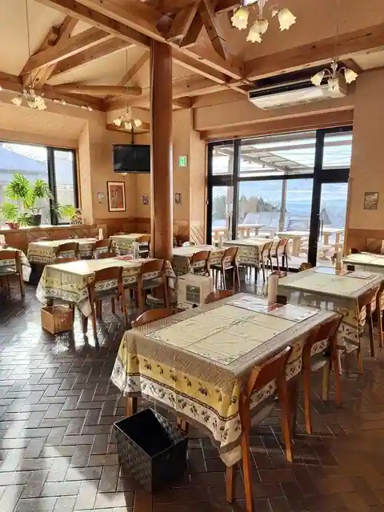
Nagi Sanroku Yama No Eki
仲屋
Naka Ya
ジャルダン奈義
Jarudan Nagi
おさじの工房
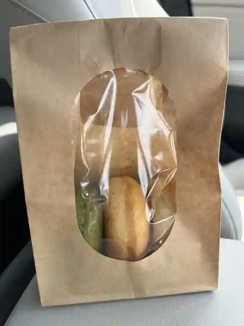
Osajino Kobo
いちご
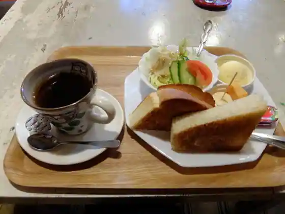
Ichigo
カフェ カルム
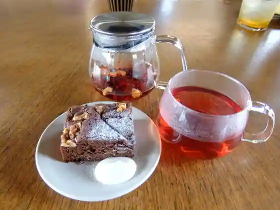
Cafe Karumu
コーヒーショップ ウインク
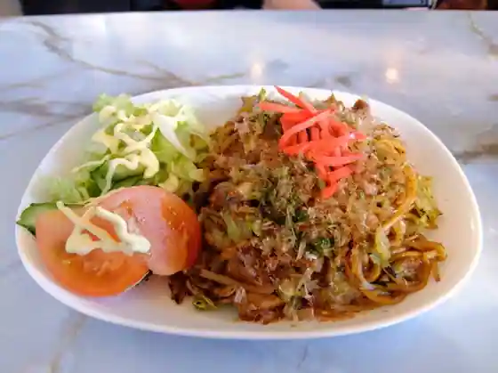
Coffee Shoppu Uinku
蓮玉
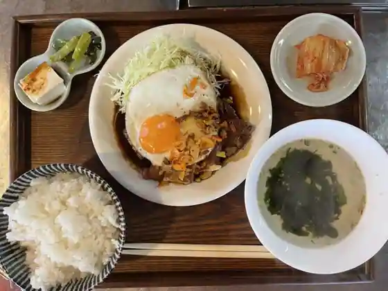
Hasu Tama
バロンセブン男爵
Baronsebun Danshaku
民宿旅館さわ
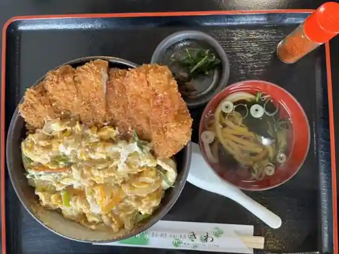
Minshuku Ryokan Sawa
リンデンバーム
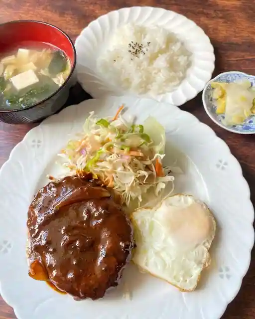
Rindenbamu
奈義町現代美術館
Nagi Machi Gendaibijutsu Kan
カフェ 山桃
Cafe Yamamomo
たこやき ももちゃん
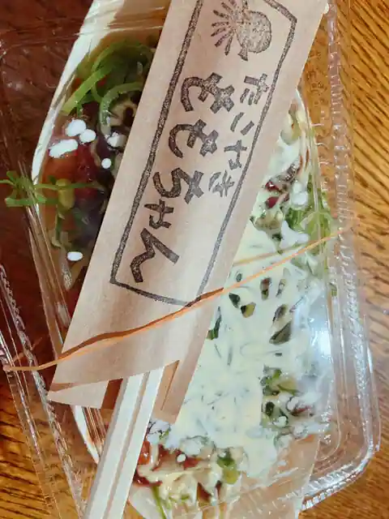
Takoyaki Momochan
Atelier Nico＋
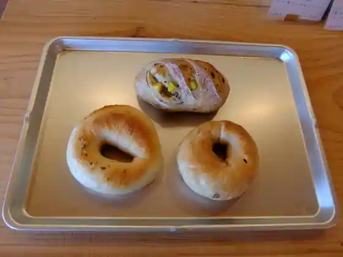
Atelier Nico +